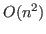
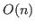

For structured symmetric matrices such as Toeplitz problems and matrices with certain rank structures, we show a fast iterative eigensolver based on bisection and a superfast direct eigensolver based on divide-and-conquer. The fast eigensolver can quickly update LDL factorizations and the inertia evaluation for varying shifts. It costs about

to find all the
flops to find all the eigenvalues. We also show that, when only few largest eigenvalues are desired, then the fast method can be extended to more general problems via low-rank approximations. This is joint work with James Vogel and Yuanzhe Xi.